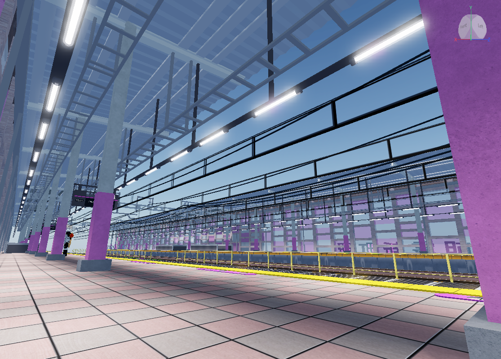
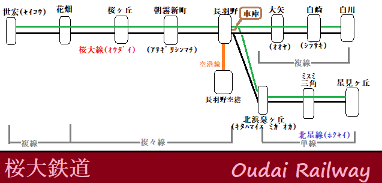
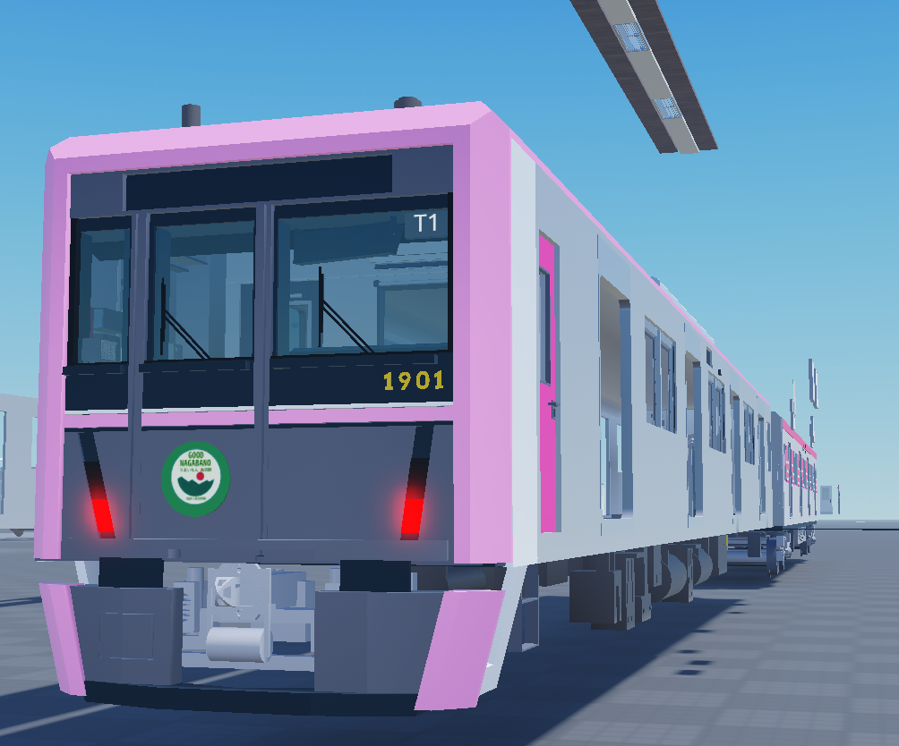

鉄道好きが集まって鉄道旅行ゲームの制作に挑戦！『桜大鉄道』開発プロジェクト

基本情報
- 制作時期
- 高校3年～大学3年（開発中止）
- 体制
- 20名程度(オンラインコミュニティ)
- 役割
- 企画協力、サウンド実装
- 使用ツール
- Roblox、VOICEVOX、Studio One Prime、Discord
制作のきっかけ
交通運営ゲーム『OpenTTD』のオンラインコミュニティにて、「Robloxで鉄道旅行ゲームを作りたい」という有志の呼びかけがあり、コミュニティメンバーと外部の有志クリエイターを合わせた大規模開発プロジェクトが発足しました。
私は企画原案の制作に協力したのち、自身のスキルを活かして、合成音声を用いた車内アナウンスの実装や発車メロディの作曲といった、音声面での協力をすることになりました。
制作における課題点
- プロジェクトマネージャーの不在
- 自身のモチベーション低下
- 複数メンバーによるコミュニティ規約違反
このプロジェクトは、2024年頃に開発中止、2025年8月には正式に開発が終了し、リリースは実現しませんでした。この項では、その裏にあったいくつもの課題についてお話しします。
開発メンバーの中にプロジェクトマネジメントを担う人物がいなかったことは、このプロジェクト最大の失敗だったと考えています。
これに起因するタスク締切の曖昧化、開発の長期化、モチベーションの低下が、開発中止、および終了の1つの要因として間違いなくあったでしょう。
私自身も、開発開始から数ヶ月後にはほぼプロジェクトに関わっていない状態になっていました。
先述の通りサウンドを担当し、開始当初は「他のどこよりもこだわり抜いた音声を提供する」と息巻いていました。しかしメインとなるモデリングや車両動作の開発が済まないと締切も読めない状況の中、「いつまでこれを続けるのか」という気持ちが湧きあがったのです。
結果として、大学進学や高校卒業に向けた活動も控える中で優先度がどんどん落ち、プロジェクトのコミュニケーションサーバーにアクセスする頻度すら減っていきました。
ほとんどのメンバーのモチベーションが低下していた本コミュニティを襲ったのが、複数のメンバーによるコミュニティ規約への違反でした。
他サーバーでのネットリンチ行為、使用モデルの盗用などによって少なくとも3人がサーバーから脱退。さらにその全員が開発に置いて重要な役割を果たしており、再び開発するとなると労力の大きさは計り知れませんでした。
この時点でまだ完成への意欲があったメンバーもいましたが、多くは「もう無理だろう」という雰囲気が流れる中で、正式に開発中止、終了へと至っていきました。


振り返り・学び
この失敗を通して、多くのことを学びました。
まず、「プロジェクトマネージャーは必ず置くこと」です。プロジェクトを立ち上げる際に完成目標を期間も含めてきっちりと決め、その進行を管理する人材がいるかどうかでプロジェクトの成功率は大きく変わると考えています。
この重要性をあらかじめ知っていた私は、大学においてプロジェクトマネジメントの講義に積極的に参加し、いざとなれば自分がプロジェクトマネジメントできるようスキルアップしました。
次に、「プロジェクトのメンバーについては事前によく知っておくこと」です。オンラインで顔も見えない相手と信頼関係を築くのは難しいですが、互いのスキルセットに関してだけでも深く知っておくべきでしょう。
最後に、「締め切りの長いタスクは避けること」です。締め切りまで長いとむしろ意欲を削ぐ結果になるため、各タスクの期間設定を適切に行う、もし長ければ細分化する、バッファに関しても含めすぎない、この三点を守る重要性を身をもって学びました。